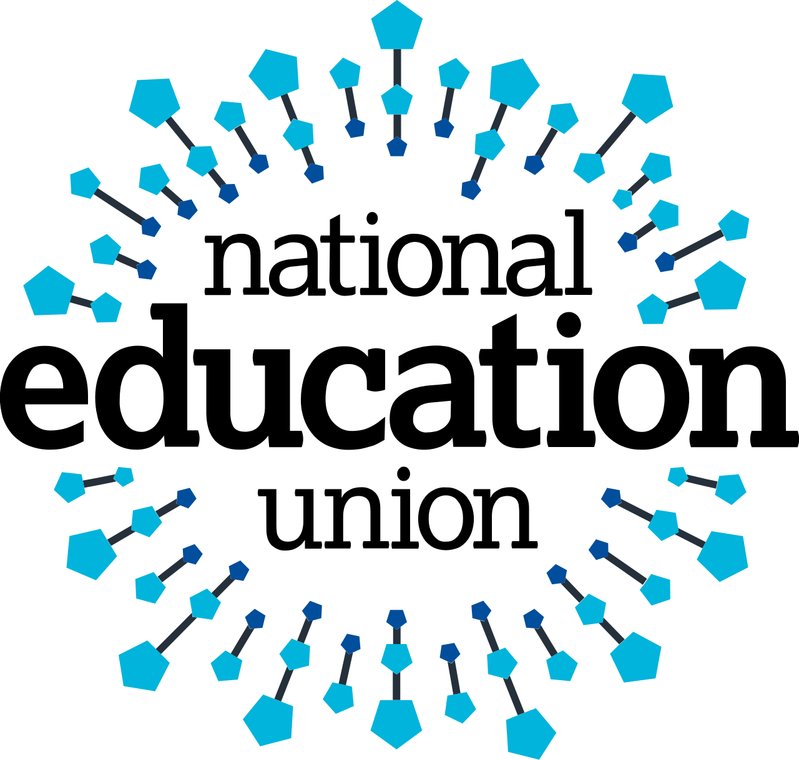

Trade union · TUC affiliate
The largest education union in the UK and indeed Europe. Came about as a merger between the National Union of Teachers and Association of Teachers and Lecturers in 2017. It is known for national campaigning, collective action, a strong activist culture and an extensive network of school representatives. Covers teachers, leaders and support staff across England, Wales and Northern Ireland. Affiliated to the TUC.
Has a political fund (members can opt out) used for campaigning on education and wider policy. Not formally affiliated to any political party.
Costs are indicative and refreshed periodically. Verify the current rate on the NEU's own joining page before committing — local branch subs vary by region.
Open to teachers, school leaders, support staff, supply teachers and trainees working in schools and colleges in England, Wales and Northern Ireland. NEU has separate national structures in Wales (NEU Cymru) and within the UK, with regional branches handling local representation.
NEU is one of the larger general teaching unions and competes most directly with NASUWT for classroom teachers in England and Wales. Compared to NASUWT, NEU tends to be more politically active and more willing to ballot for national industrial action. Compared to leadership-specific options like NAHT or ASCL, NEU offers broader eligibility but less specialist focus on leadership-specific casework.
For people whose priorities lean toward casework rather than collective action, an apolitical option like Edapt may rank higher. For people whose priorities lean toward strike capability, in-school reps and active campaigning, NEU is one of the strongest options available.
This overview is compiled from public information published by the NEU and our own value-framework rating. If you spot a factual error or think we've described something unfairly, please email us — we publicly correct factual errors. See the methodology for how we rate every organisation on the same framework.